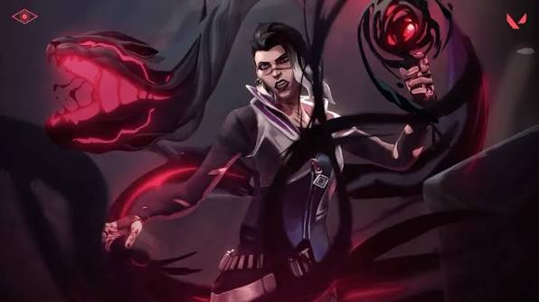
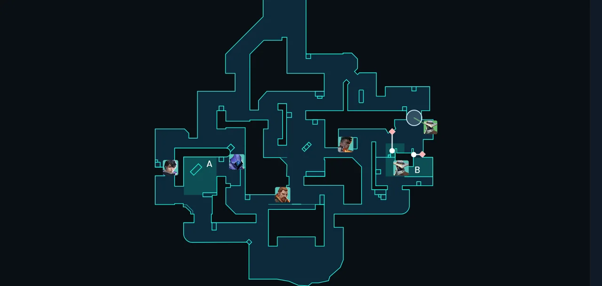
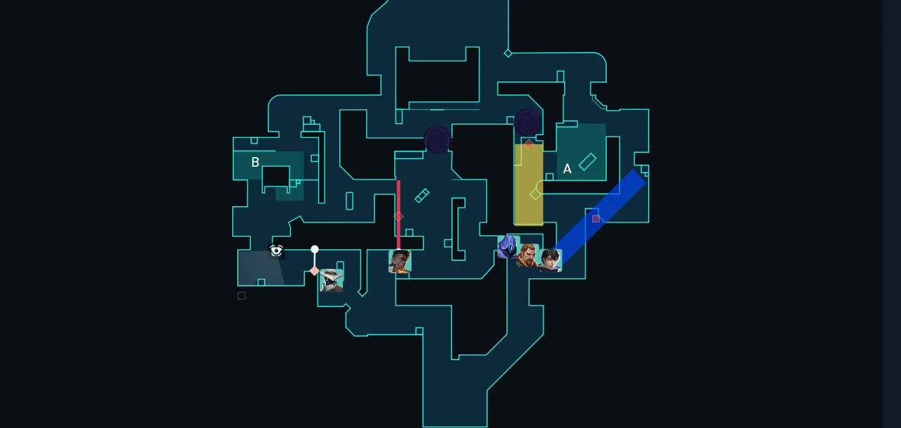

Sidearms
Keep your sidearm as a backup. Switch to it quickly when your primary is empty or when you need to move fast.
Step 1 of 3
Learn what each weapon class does, then practise your aim before you play your first match.

Keep your sidearm as a backup. Switch to it quickly when your primary is empty or when you need to move fast.
Fire in short bursts at medium range. Controlling the spray matters more than raw damage per bullet.
Use them close to a corner or choke point, where the pellets are most likely to land on an enemy.
Learn the recoil pattern of your main rifle in the range and pull your crosshair back against it as you fire.
Scope in and stand still for accuracy. Moving while unscoped makes your shots much less reliable.
Ares and Odin are heavy and slow to move with. Use them to hold a long lane rather than to push into one.
Spend about ten minutes warming up before each session. These two drills cover the basics.

Open the practice range from the game's main menu and shoot at targets at different distances. Stand still first to learn how accurate each weapon's first bullet is, then strafe and shoot to practise stopping before you fire.
Visit VALORANT (opens in a new tab)Death Match is a free-for-all mode with quick respawns, so you get many fights in a short time. Use it to warm up with the weapons and maps you plan to play, and focus on landing your first bullet rather than chasing kills.
Pick a map to practise